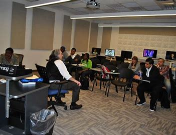
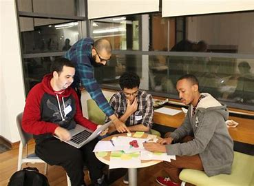
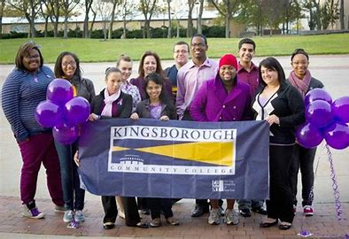
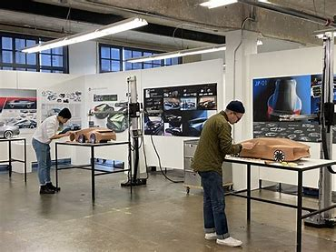
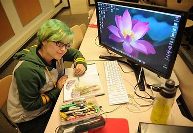
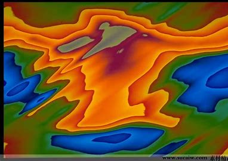

Queens College Ranked in Top 25 of Best Public Colleges and Universities for Graphic Design in the Nation.
Design News
CUNY TV Wins 21st New York Emmy Award For Animated Opening Sequence of ‘Shades of U.S.’
April 27, 2020
The City University of New York won two awards in the 63rd New York Emmy Awards, as CUNY TV and the New York City College of Technology each earned honors in Saturday’s ceremony. The award for CUNY TV brings to 21 the total number of Emmys the station has been awarded by the National Academy of Television Arts & Sciences New York Chapter.
CUNY Expands Digital Skills Curriculum and Creates Student Pipeline for Tech Jobs
October 28, 2019
The City University of New York has significantly expanded its digital skills curriculum as part of a broad-based effort to produce a steady pipeline of diverse, adaptable, critical thinkers who can thrive in a workplace environment that is increasingly reliant on advanced digital technologies across most sectors of the economy. Another aim of this initiative is to encourage traditionally underrepresented groups to take up tech-focused areas of study.
The Animation and Motion Graphics program provides students with the fundamentals of two- and three-dimensional (2D and 3D) animation, motion graphics, and special effects for advertising campaigns, video games, movies, and television.
Borough of Manhattan Community College
Multimedia Programming and Design
Degree: A.S.
The Multimedia Programming and Design Program prepares students for careers in a variety of multimedia industries, companies and institutions that develop, produce or market multimedia products, programs or services.
Bronx Community College
Digital Design
Degree: A.A.S.
This program prepares students for careers in the visual communication industry in positions such as graphic design, web design, computer animation, 3D graphic visualization, motion graphics design and interactive multimedia design.

Hostos Community College
Digital Design& Animation
Degree: A.S.
Through lectures and studio-based classes the Digital Design and Animation Program provides students with a strong foundation for future occupations in motion graphics, animation, graphic design and/or web design.

Hostos Commmunity College
Game Design
Degree: A.S.
The Associate degree in Game Design will provide students with a strong foundation for future occupations in the entertainment software industry. It will provide students with additional career opportunities in the field of entertainment software publishing.

Kingsborough Community College
Graphic Design and illustration
Degree: A.S.
The Art Department at Kingsborough Community College is dedicated to providing a comprehensive program of study in the visual arts, designed to prepare students of diverse life experience for either continued baccalaureate study or immediate entry into a range of visual art professions.

LaGuardia Community College
Industrial Design
Degree: A.A.S.
The Industrial Design program provides students a foundation experience in the necessary skills to begin a career in Computer Assisted Design (CAD), Model making, Product Design and Fabrication or transfer to a four-year institution.
LaGuardia Community College
New Media Techonology
Degree: A.A.S.
The New Media Technology major offers students the opportunity to work and experiment with some of the exciting technologies available today. Students develop a broad understanding of multimedia and Internet technologies in order to develop expertise in creating digital content.

Queensborough Community College
Degital Art and Design
Degree: A.S.
The A.S. degree program in Digital Art and Design prepares students to enter the greatly expanding field of new media. In addition to four basic courses that provide a solid background in art, students take five courses in digital art and design, which develop computer skills for fine and applied arts.
New York City College of Techonology
Industrial Design Techonology
Degree: A.A.S.
The Industrial Design Technology (IND) program is designed to provide students with a wide variety of skills enabling them to utilize a number of 2D, 3D and animation/simulation software packages in several diverse fields.
New York City College of Techonology
Communication Design
Degree: A.A.S.
The AAS degree program in Communication Design provides students with a solid foundation in the theory and practices of the Communication Design profession and a grounding in general education. Students explore visual expression through a range of courses in drawing, design and web design.
New York City College of Techonology
Communication Design
Degree: B.F.A.
TThe BFA degree develops students' abilities to frame, research and solve increasingly complex visual communication problems. Students develop a professional portfolio that prepares them for employment as art directors, graphic designers, illustrators and web designers.
Queens College
Design
Degree: B.F.A.
Queens College’s Design program combines knowledgeable faculty with industry standard software and the creativity of a studio-based learning environment. Students choose one of three concentrations: Communication Design, Animation & Illustration or Interaction Design.
The City College of New York
Electronic Design and Multimedia
Degree: B.F.A.
The Electronic Design & Multimedia prepares students for careers in design in traditional print and emerging electronic media. It offers one of the most comprehensive, affordable 4-year programs in electronic art at a New York City public university, and has a 18-year record of alumni success.
York College
Animation and Motion Graphics
Degree: B.S.
An interdisciplinary program that brings together television, web, information systems, computer science, and design. The program offers three main concentrations: digital video, computer graphics, and systems and applications.

Lehman College
Computer Graphics and Imaging
Degree: B.S.
The Computer Graphics and Imaging program offers courses covering web design, imaging, 3-D modeling, animation, interactivity, and broadcast design, preparing students for careers as well as graduate study in these fields.
Baruch College
Graphic Communication
Degree: B.A.
The graphic communication specialization provides training in graphics as well as basic training in the broader aspects of business communication. It prepares the graphic artist to enter a business environment.